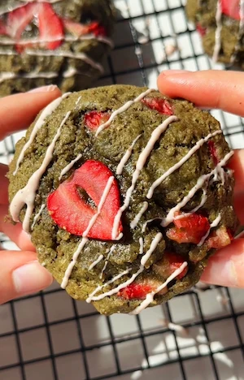

Strawberry Matcha Cookies (gooey, small batch, refined sugar free and dairy free)
if there is one flavour combination that just screams spring and summer to me, it's strawberry and matcha. the earthy taste of the matcha paired with the sweet, fresh flavour of the strawberries is one of those combos that feels both refreshing and indulgent at the same time, and these small batch strawberry matcha cookies are the best version of that combination i've come up with yet. first of all, they are gorgeoussss , probably one of the cutest cookies i've ever made, and second of all they are gooey, refined sugar free, dairy free yet don't taste like a "healthy" cookie. which if you've been following along for a while, you know is my speciality.
i personally love making small batch cookie recipes simply because cookies taste best fresh. six medium cookies is the perfect amount if you're baking just for yourself or for one or two people. that said, if you want to double the recipe to share with friends or family, it scales up perfectly. these strawberry matcha cookies also freeze perfectly. it's best to freeze them once they have cooled after baking so that once thawed you still get that freshly baked cookie taste and texture.
let's talk about the matcha first. 1 1/2 teaspoons is the amount in the recipe but as always, adjust to your own preference and taste. if you know you like a stronger matcha taste or have a higher caffeine tolerance lol then you can add more (or less!). matcha has this beautiful earthy depth that works so well in a cookie because it cuts through the sweetness slightly and gives the whole thing a more elevated, interesting flavour. it also gives the cookies that gorgeous green colour which honestly makes them look as good as they taste, especially with the bright red strawberries dotted throughout and on top. if you're new to matcha in baked goods, start with a teaspoon, taste the dough, and go from there. i highly recommend using an organic ceremonial grade matcha since that will give you the best taste and colour but food grade matcha will work too.
coconut sugar is what sweetens these cookies and it works really well here instead of a liquid sweetener. it has a slightly caramel-like flavour that complements the matcha beautifully and gives the cookies a chewy, dense texture that is exactly what you want. it also means the recipe is completely refined sugar free. if you don't have coconut sugar, any granulated sugar alternative you like would work, though the flavour and texture may vary slightly.
now onto the strawberries... please use ripe, sweet strawberries because they are doing a lot of the flavour work. chop them fairly small so they distribute evenly throughout the dough and don't make the cookies too wet in the centre. i also love topping each cookie with a few extra slices of fresh strawberry before they go in the oven because they soften and go almost jammy as they bake, which makes the cookies look pretty and adds an extra pop of colour. for the strawberry slices on top, slice them thinly vertically to get that cute strawberry shape.
the flour situation: the recipe is written with wholemeal flour which adds extra fibre and gives the cookies a slightly more dense, hearty texture that i love for a gooey cookie. but if you need these to be gluten free, simply swap the wholemeal flour for 150g of oat flour and the cookies work just as well. they'll be slightly softer and a little more tender, but still delicious and just as gooey. if you use oat flour and need the recipe to be strictly gluten free, just make sure to use certified gluten free oat flour.
chilling the dough for 15 minutes before baking is not optional. i know it feels like an extra step but it makes a real difference to the texture and taste. chilling firms up the dough slightly so these strawberry matcha cookies hold their shape in the oven rather than spreading too thin, and it also deepens the flavour. 15 minutes in the fridge is all you need and you can use that time to preheat your oven, line your tray and prep the extra strawberry slices for the top.
baking time is 10 to 14 minutes depending on the texture you're after. 10 minutes gives you a very soft, almost underbaked gooey centre which is my personal favourite. 14 minutes gives you a more set cookie with slightly crispier edges. both are wonderful and it really comes down to your preference. just keep in mind that the cookies will continue to firm up as they cool on the tray, so if they look a little underdone when they come out of the oven, don't panic. they're meant to look that way!
these matcha strawberry cookies would also make for the perfect gift or sweet treat contribution to any gathering. they look adorable and like they took way more effort than they did, and they taste divine! if you need more matcha recipes, check out my no bake matcha ganache bars or 4 ingredient matcha marshmallows.
Frequently Asked Questions
Can I make these strawberry matcha cookies gluten free?
Yes! swap the wholemeal flour for 150g of oat flour for an easy gluten free version. the cookies will be slightly softer and more tender but still gooey and delicious. if you have coeliac disease or high gluten sensitivity, use certified gluten free oat flour to avoid any cross contamination.
Can I use a different flour in this strawberry matcha cookie recipe?
Wholemeal flour is recommended for the best texture and flavour, but a plain all purpose flour works too if that's what you have. for gluten free, use 150g oat flour as above.
Why do I need to chill the dough for cookies?
Chilling firms up the coconut oil in the dough which prevents the cookies from spreading too flat in the oven and helps them hold their shape. it also gives the flavours time to develop. 15 minutes is enough but you can chill the dough for longer if needed, even overnight.
Why do my cookies look underbaked when they come out of the oven?
That is completely normal and intentional! cookies continue to set as they cool on the tray, so what looks slightly underdone in the oven will firm up into a perfectly gooey cookie once cooled. if you pull them out at 10 to 11 minutes they will look very soft, but let them cool fully before touching them and the cookies will have firmed up.
Can I use frozen strawberries in these strawberry matcha cookies?
Fresh strawberries are strongly recommended here as frozen strawberries release a lot of water when they defrost and can make the dough too wet and the cookies soggy. if fresh strawberries aren't available, defrost frozen ones fully, pat them very dry with kitchen paper, and chop them small before folding in. the result may be slightly wetter in texture but should still work. if the batter seems too wet, add an extra tablespoon of flour at a time.
How should I store these strawberry matcha cookies?
Store in an airtight container at room temperature for up to 2 days or in the fridge for up to 4 days. because of the fresh strawberries, they are best eaten within the first day or two. to get that fresh-baked gooey texture back, pop them in the microwave for 10 to 15 seconds before eating.
How do I increase the fibre in these strawberry matcha cookies?
Add in the desiccated coconut for a fibre boost. you can also add an additional 22g ground chia seeds mixed with 100ml water. mix them in a small bowl and let sit for 10 minutes, then stir the gel into the batter just before adding the chopped strawberries. this will give the recipe almost 5g of fibre per cookie. note that the texture does change. you get more of a scone-like consistency compared to a gooey cookie, but if that's your vibe you will love it.
How do I avoid an overmixed batter?
Just like in a classic chocolate chip cookie recipe, you want to ensure these strawberry matcha cookies are not overmixed so that they come out gooey and soft instead of dense. to avoid overmixing, fold in the flour until 70% incorporated then add in the chopped strawberries. while you are gently folding in the strawberries, the rest of the flour will be mixed too. this hack works for any kind of add-in in any cookie recipe!
Pro Tips
- Don't skip chilling the dough! 15 minutes in the fridge prevents spreading and deepens the flavour.
- Bake for 10 minutes for an ultra gooey centre, up to 14 for a more set cookie. They firm up further as they cool so don't overbake.
- Don't overmix the batter: fold the flour in until 70% incorporated then add in the chopped strawberries.
- Adjust the matcha to your taste. Start at 1 teaspoon if you're new to matcha in baking and work up from there.
- Add in the desiccated coconut for a slight crunch that also elevates the flavour.
Strawberry Matcha Cookies (Gooey)

Ingredients
Instructions
- Step 1: In a bowl, whisk together the egg, melted coconut oil and coconut sugar until fully combined and slightly airy.
- Step 2: Stir in the matcha until evenly incorporated.
- Step 3: Fold in the salt, baking soda and flour until almost combined.
- Step 4: Stir in the desiccated coconut if using.
- Step 5: Gently fold in the chopped strawberries.
- Step 6: Chill the dough in the fridge for 15 minutes.
- Step 7: Preheat the oven to 170°C / 160°C fan.
- Step 8: Scoop onto a lined baking tray and top with extra sliced strawberries.
- Step 9: Bake for 10 to 14 minutes depending on your preferred texture.
- Step 10: Leave to cool and enjoy!
Nutrition Facts
Per one serving:
*Nutritional information is estimated and will vary depending on the ingredients and brands you use. Basic macros don't reflect the full nutritional value including vitamins, minerals, antioxidants, and other beneficial compounds. Please use this as a guideline only.